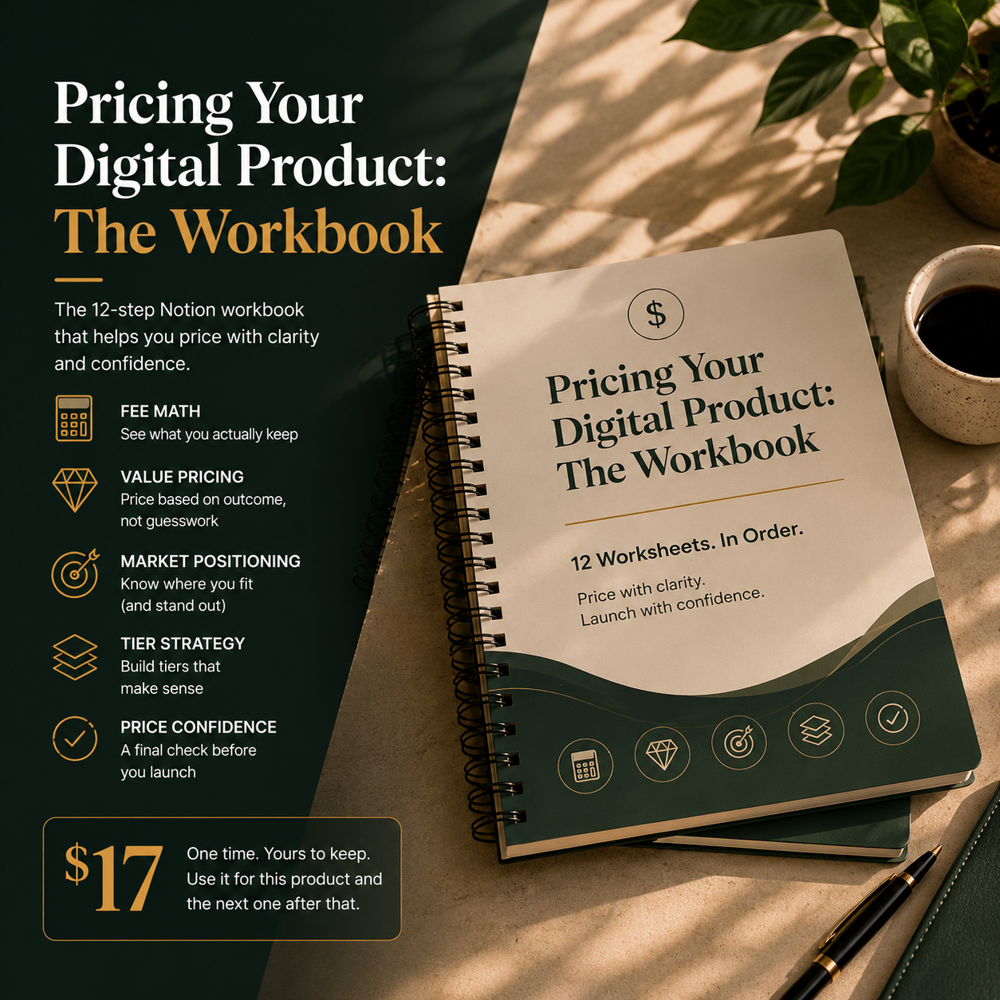
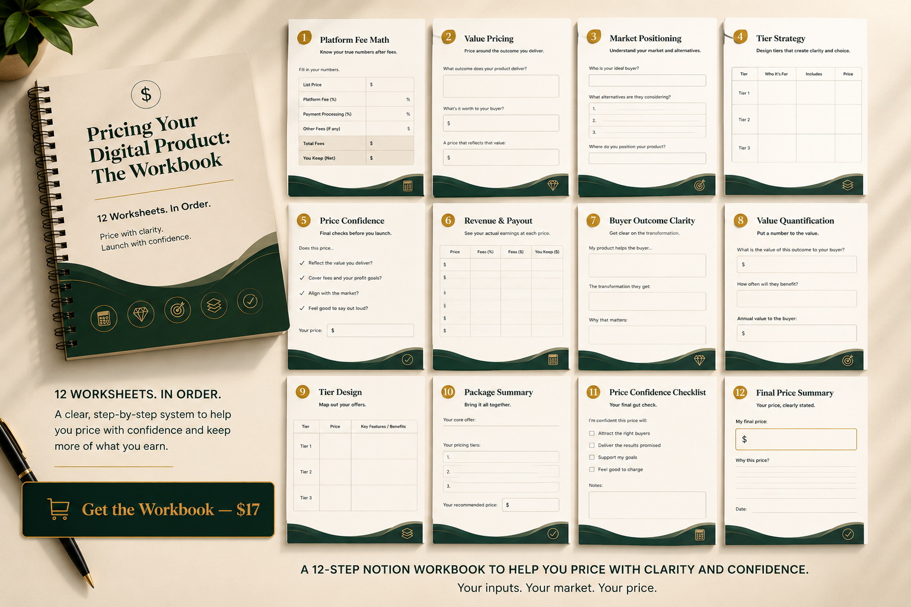

Pricing Your Digital Product: The Workbook
Most creators charge less than their work is worth. Not by a little, and not because they don't care. They pick a number that feels safe, the platform takes its cut, and the gap between what they charge and what buyers would happily pay just sits there, quietly costing them.

The problem
You know the feeling. The product is done. The only thing left is the price field, and that's where everything stalls. You think of a number, then talk yourself down from it. You glance at what other people charge and copy something close. You launch at a price you half-believe in, and somewhere underneath, you suspect you're leaving money on the table.
The trouble is, undercharging doesn't feel like a number. It feels like caution. So it's hard to see the actual distance between what you're asking and what the work is worth. That distance is real, and it's usually larger than people expect. You can't close a gap you can't measure.
How this came about
This started as a spreadsheet I kept rebuilding for myself. Every time I launched something, I went through the same loop: guess a price, second-guess it, forget about platform fees until the first sale landed and the payout was smaller than I'd pictured.
Eventually I stopped guessing and wrote down the steps I was actually doing in my head, badly. What does the platform take. What does the buyer actually get out of this. Where do I sit against the alternatives. How should the tiers work. Could I say the final number out loud without wincing.
That became twelve worksheets, in order. Not advice to read, not a course to sit through. Just the questions, with space to answer them using your own numbers, until a price falls out the other end that you can stand behind.
What you get
It's a Notion workbook with twelve fill-in worksheets, worked in order across five stages: the platform fee math, value pricing, market positioning, tier strategy, and a final price-confidence check.
You put in your real inputs. Your fees, your buyer's outcome, your market. What comes out is your price, not a formula someone handed you. It's seventeen dollars, paid once, yours to keep and reuse for the next product and the one after that.

Why it works
The reason it works is that it starts with the part you can't argue with: the math. Before you talk yourself into or out of anything, you see what you actually keep after the platform takes its cut. That alone tends to move the number.
From there each stage builds on the last. By the time you reach the final checklist, the price isn't a hope. It's something you can trace back through fees, value, and position. That's the difference between a number you guessed and a number you can defend.
Honest answers
You can find pricing advice for free, and a lot of it is good. The catch is that free advice leaves you to assemble it yourself. This gives you the worksheets in order, so you finish with a price instead of more tabs open.
You might wonder if it fits your specific product. It runs entirely on your inputs, so the output is shaped by your situation rather than a generic template.
And seventeen dollars can seem too small to do much. That's sort of the point. It's a narrow, focused tool. The first time the fee math stops you from underpricing by a few dollars, it's already paid for itself.
If it's a fit
If you've been stuck at the price field, this is a quiet way through it. Work the twelve worksheets, in order, with your own numbers, and come out with a price you can say plainly. It's seventeen dollars, one time. When you're ready, it's here.